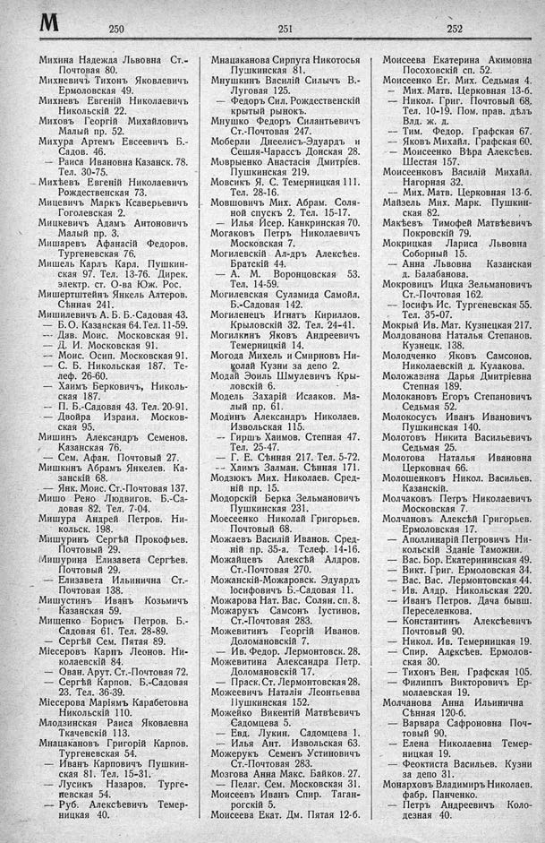

Лист источника 434
Скан

Распознанный текст
М 250
Михина Надежда Львовна Ст.-
Почтовая 80.
Михневичъ Тихонъ Яковлевичъ
Ермоловская 49.
Михневъ Евгеній Николаевичъ
Никольскій 22.
Миховъ Георгій Михайловичъ
Малый пр. 52.
Михура Артемъ Евсеевичъ Б.-
Садов. 46.
— Раиса Ивановна Казанск. 78.
Тел. 30-75.
Михѣевъ Евгеній Николаевичъ
Рождественская 73.
Мицевичъ Маркъ Ксаверьевичъ
Гоголевская 2.
Мицкевичъ Адамъ Антоновичъ
Малый пр. 3.
Мишаревъ Афанасій Федоров.
Тургеневская 76.
Мишель Карлъ Карл. Пушкин-
ская 97. Тел. 13-76. Дирек.
электр. ст. О-ва Юж. Рос.
Мишертштейнъ Янкель Алтеров.
Сѣнная 241.
Мишилевичъ А. Б. Б.-Садовая 43.
— Б. О. Казанская 64. Тел. 11-59.
— Дав. Моис. Московская 91.
— Д. И. Московская 91.
— Моис. Осип. Московская 91.
— С. Б. Никольская 187. Те-
леф. 26-60.
— Хаимъ Берковичъ, Николь-
ская 187.
— П. Б.-Садовая 43. Тел. 20-91.
— Двойра Израил. Москов-
ская 95.
Мишинъ Александръ Семенов.
Казанская 76.
— Сем. Афан. Почтовый 27.
Мишкинъ Абрамъ Янкелев. Ка-
занскій 68.
— Янк. Моис. Ст.-Почтовая 137.
Мишо Рено Людвигов. Б.-Са-
довая 82. Тел. 7-04.
Мишура Андрей Петров. Ни-
кольск. 198.
Мишуринъ Сергѣй Прокофьев.
Почтовый 29.
Мишурина Елизавета Сергѣев.
Почтовый 29.
— Елизавета Ильинична Ст.-
Почтовая 138.
Мишустинъ Иванъ Козьмичъ
Казанская 59.
Мищенко Борисъ Петров. Б.-
Садовая 61. Тел. 28-89.
— Сергѣй Сем. Пятая 89.
Міесеровъ Карпъ Леонов. Ни-
колаевскій 84.
— Ован. Арут. Ст.-Почтовая 72.
— Сергѣй Карпов. Б.-Садовая
23. Тел. 36-39.
Міесерова Маріямъ Карабетовна
Никольскій 110.
Млодзинская Раиса Яковлевна
Ткачевскій 113.
Мнацакановъ Григорій Карпов.
Тургеневская 54.
— Иванъ Карповичъ Пушкин-
ская 81. Тел. 15-31.
— Лусикъ Назаров. Турге-
невская 54.
— Руб. Алексѣевичъ Темер-
ницкая 40.
251
Мнацаканова Сирпуга Никотосья
Пушкинская 81.
Мнушкинъ Василій Силычъ В.-
Луговая 125.
— Федоръ Сил. Рождественскій
крытый рынокъ.
Мнушко Федоръ Силантьевичъ
Ст.-Почтовая 247.
Моберли Днеелись-Эдуардъ и
Сешля-Чарассъ Донская 28.
Моврыенко Анастасія Дмитріев.
Пушкинская 219.
Мовсикъ Я. С. Темерницкая 111.
Тел. 28-16.
Мовшовичъ Мих. Абрам. Соля-
ной спускъ 2. Тел. 15-17.
— Илья Исер. Канкринская 70.
Могаковъ Петръ Николаевичъ
Московская 7.
Могилевскій Ал-дръ Алексѣев.
Братскій 44.
— А. М. Воронцовская 53.
Тел. 14-59.
Могилевская Суламида Самойл.
Б.-Садовая 142.
Могиленецъ Игнатъ Кириллов.
Крыловскій 32. Тел. 24-41.
Могилкинъ Яковъ Андреевичъ
Темерницкій 14.
Могода Михель и Смирновъ Ни-
колай Кузни за депо 2.
Модай Эоиль Шмулевичъ Кры-
ловскій 6.
Модель Захарій Исааков. Ма-
лый пр. 61.
Модинъ Александръ Николаев.
Извольская 115.
-- Гиршъ Хаимов. Степная 47.
Тел. 25-47.
— Г. Е. Сѣнная 217. Тел. 5-72.
-- Хаимъ Залман. Сѣнная 171.
Модзютъ Мих. Николаев. Сред-
ній пр. 15.
Модорскій Берка Зельмановичъ
Пушкинская 231.
Моесеенко Николай Григорьев.
Почтовый 68.
Можаевъ Василій Иванов. Сред-
ній пр. 35-а. Телеф. 14-16.
Можайцевъ Алексѣй Алдров.
Ст.-Почтовая 270.
Можанскій-Можаровск. Эдуардъ
Іосифовичъ Б.-Садовая 11.
Можарова Нат. Вас. Солян. сп. 8.
Можарукъ Самсонъ Іустинов.
Ст.-Почтовая 283.
Можевитинъ Георгій Иванов.
Доломановскій 7.
— Ив. Федор. Лермонтовск. 28.
Можевитина Александра Петр.
Доломановскій 17.
— Праск. Ст. Лермонтовская 28.
Можеевичъ Наталія Леонтьевна
Пушкинская 152.
Можейко Викентій Матвѣевичъ
Садомцева 5.
— Евд. Лукин. Садомцева 1.
— Илья Ант. Извольская 63.
Можерукъ Семенъ Устиновичъ
Ст.-Почтовая 283.
Мозгова Анна Макс. Байков. 27.
— Пелаг. Сем. Московская 31.
Моисеевъ Иванъ Спир. Таган-
рогскій 5.
Моисеева Екат. Дм. Пятая 12-б.
252
Моисеева Екатерина Акимовна
Посоховскій сп. 52.
Моисеенко Ег. Мих. Седьмая 4.
— Мих. Матв. Церковная 13-б.
— Никол. Григ. Почтовый 68.
Тел. 10-19. Пом. прав. дѣлъ
Влд. ж. д.
— Тим. Федор. Графская 67.
— Яковъ Михайл. Графская 60.
— Моисеенко Вѣра Алексѣев.
Шестая 157.
Моисеенковъ Василій Михайл.
Нагорная 32.
— Мих. Матв. Церковная 13-б.
Майзель Мих. Марк. Пушкин-
ская 82.
Макѣевъ Тимофей Матвѣевичъ
Покровскій 79.
Мокрицкая Лариса Львовна
Соборный 15.
— Анна Львовна Казанская
д. Балабанова.
Мокровицъ Ицка Зельмановичъ
Ст.-Почтовая 162.
— Іосифъ Ис. Тургеневская 55.
Тел. 35-07.
Мокрый Ив. Мат. Кузнецкая 217.
Молдованова Наталья Степанов.
Кузнецк. 138.
Молодченко Яковъ Самсонов.
Николаевскій д. Кулакова.
Моложавина Дарья Дмитріевна
Степная 189.
Молокановъ Егоръ Степановичъ
Седьмая 52.
Молокоусъ Иванъ Ивановичъ
Пушкинская 140.
Молотовъ Никита Васильевичъ
Седьмая 25.
Молотова Наталья Ивановна
Церковная 66.
Молошенковъ Никол. Васильев.
Казанскій.
Молчаковъ Петръ Николаевичъ
Московская 7.
Молчановъ Алексѣй Григорьев.
Ермоловская 17.
— Аполлинарій Петровичъ Ни-
кольскій Зданіе Таможни.
— Вас. Бор. Екатерининская 49.
— Викт. Григ. Ермоловская 34.
— Вас. Вас. Лермонтовская 44.
— Ив. Алдр. Никольская 220.
-- Иванъ Петров. Дача бывш.
Переселенкова.
— Константинъ Алексѣевичъ
Почтовый 90.
— Никол. Ив. Темерницкая 19.
— Спир. Алексѣев. Ермолов-
ская 30.
— Тихонъ Вен. Графская 105.
— Филиппъ Викторовичъ Ер-
молаевская 19.
Молчанова Анна Ильинична
Сѣнная 120-б.
— Варвара Сафроновна Поч-
товый 90.
— Елена Николаевна Темер-
ницкая 19.
— Феоктиста Васильев. Кузни
за депо 31.
Монарховъ Владимиръ Николаев.
фабр. Панченко.
— Петръ Андреевичъ Коло-
дезная 40.